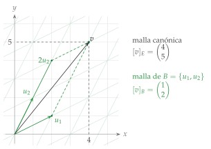

Parcial 2 · Espacios fundamentales, cambio de base y ortogonalidad
Para arrancar«Tres cuadras al norte» solo tiene sentido si sabes dónde queda el norte. Las coordenadas de un vector dependen de la base, igual que una dirección depende de tu mapa.
Un espacio vectorial V de dimensión n es, como conjunto, algo abstracto: polinomios, matrices, funciones. Sin embargo, una vez fijada una base, cada vector de V queda descrito por una lista de n números, y las operaciones de V se convierten en las operaciones conocidas de Rn. Este capítulo formaliza esa traducción y estudia qué le ocurre a la descripción de un mismo vector cuando cambiamos de base. Las herramientas del capítulo anterior (base, dimensión, independencia lineal) se usan aquí todo el tiempo; el resultado central es que pasar de una base a otra se hace multiplicando por una matriz invertible que se calcula, en la práctica, con la eliminación de Gauss-Jordan.
En todo el capítulo los espacios vectoriales son reales, de dimensión finita n≥1.
5.1 Coordenadas respecto de una base
Si B={v1,…,vn} es una base de V, sabemos que todo vector se escribe como combinación lineal de los vi. Lo que hace útil a una base (y no a cualquier conjunto generador) es que esa escritura es única. Es el hecho que permite hablar de «las» coordenadas de un vector.
Sea B={v1,v2,…,vn} una base de un espacio vectorial V. Para cada vector v∈V existen escalares c1,c2,…,cn, y son únicos, tales que v=c1v1+c2v2+⋯+cnvn.
Demostraciónmostrar
Existencia. Como B es base, en particular genera a V; es decir, todo v∈V es combinación lineal de v1,…,vn. Eso da los escalares c1,…,cn.
Unicidad. Supongamos que v admite dos representaciones, v=c1v1+⋯+cnvnyv=d1v1+⋯+dnvn. Restando miembro a miembro y agrupando términos con las propiedades de las operaciones del espacio vectorial (asociatividad, conmutatividad y distributividad), 0=v−v=(c1−d1)v1+(c2−d2)v2+⋯+(cn−dn)vn. Pero B es linealmente independiente, así que la única combinación lineal de sus vectores que da el vector cero es la trivial: ci−di=0 para cada i, es decir, ci=di. Las dos representaciones coinciden.
Observa que la existencia usa solo que B genera, y la unicidad solo que B es independiente: cada una de las dos propiedades de una base cumple su propio papel.
Para que la lista (c1,…,cn) tenga sentido como vector de Rn hace falta que las componentes ocupen un lugar fijo. Por eso, en lo que sigue, una base es una lista ordenada: B={v1,…,vn} significa que v1 es el primer vector, v2 el segundo, y así sucesivamente.
Sea B={v1,v2,…,vn} una base ordenada de V y sea v∈V con v=c1v1+c2v2+⋯+cnvn. Los escalares c1,…,cn se llaman las coordenadas de v respecto de B, y el vector columna [v]B=c1c2⋮cn∈Rn se llama el vector de coordenadas (o vector coordenado) de v respecto de B.
El teorema 5.1 garantiza que [v]B está bien definido: hay uno, y solo uno, para cada v. Dos observaciones sobre la definición. Primero, el orden importa: si en B={(1,0),(1,2)} se intercambian los dos vectores para obtener B∗={(1,2),(1,0)}, las componentes de [v]B también se intercambian. Como (5,4)=3(1,0)+2(1,2), se tiene [(5,4)]B=(32),[(5,4)]B∗=(23). Segundo, cuando V=Rn y B es la base canónica, [v]B es el propio v escrito en columna, y por eso no solemos notar la diferencia entre un vector y sus coordenadas canónicas. Con otra base, en cambio, v y [v]B son objetos distintos, aunque estén en correspondencia perfecta.
Cómo se calculan las coordenadas
La definición ya dice cómo se calculan. Para hallar [v]B hay que encontrar escalares c1,…,cn que cumplan c1v1+⋯+cnvn=v; esto es un sistema lineal n×n cuya matriz de coeficientes tiene por columnas los vectores de B (o sus coordenadas canónicas, si V no es Rn). El sistema tiene solución única precisamente por el teorema 5.1. En las bases canónicas el sistema se resuelve a la vista.
Ejemplo 5.3· Coordenadas respecto de bases canónicas
a) Halla [x]B para x=(−3,2,1) y B={(1,0,0),(0,1,0),(0,0,1)} en R3.
b) Halla [p]B para p(x)=2−3x+5x2 y B={1,x,x2} en P2.
c) Halla [A]B para A=(24−13) y B={E11,E12,E21,E22} en M2×2, donde Eij tiene un 1 en la posición (i,j) y ceros en las demás.
Soluciónintenta primero
a)(−3,2,1)=−3(1,0,0)+2(0,1,0)+1(0,0,1), luego [x]B=−321.
b)2−3x+5x2=2⋅1+(−3)⋅x+5⋅x2, luego [p]B=2−35.
c)A=2E11+(−1)E12+4E21+3E22, luego [A]B=2−143∈R4.
En estos tres casos las coordenadas son, simplemente, los coeficientes o las entradas escritas en el orden de la base. Con una base no canónica hay que resolver un sistema, pero la dirección contraria (pasar de las coordenadas al vector) es siempre una combinación lineal directa.
Ejemplo 5.4· De las coordenadas al vector, y de vuelta
El vector de coordenadas de x∈R2 respecto de la base B={(1,0),(1,2)} es [x]B=(32). Halla x y su vector de coordenadas respecto de la base canónica. Después, recorra el camino inverso.
Soluciónintenta primero
Por la definición de coordenadas, x=3(1,0)+2(1,2)=(3,0)+(2,4)=(5,4). Como la base canónica E={(1,0),(0,1)} cumple [x]E=x, el vector de coordenadas canónico es (54).
Recíprocamente, para hallar las coordenadas de v=(5,4) respecto de B se plantea c1(1,0)+c2(1,2)=(5,4), es decir, (101254)F2→21F2(101152)F1→F1−F2(100132), de modo que [v]B=(32), como debía ser.
Un mismo vector, dos descripciones
El ejemplo anterior contiene la idea central del capítulo: el vector (5,4) es un solo objeto geométrico, pero tiene dos descripciones numéricas, (5,4) y (3,2), según con qué «regla» se mida. La figura siguiente muestra la situación en un caso donde la base oblicua se ve mejor: v=(4,5) y B={u1,u2} con u1=(2,1), u2=(1,2). Se resuelve c1(2,1)+c2(1,2)=(4,5): la eliminación (211245)F1↔F2(122154)F2→F2−2F1(102−35−6)F2→−31F2F1→F1−2F2(100112) da c1=1, c2=2. Así [v]E=(45) respecto de la base canónica E y [v]B=(12) respecto de B, porque v=1⋅u1+2⋅u2=(2,1)+(2,4).

El vector v y las dos mallas de coordenadas. Las rectas grises son paralelas a los ejes canónicos y dan [v]E=(4,5); las verdes son paralelas a u1=(2,1) y u2=(1,2) y dan [v]B=(1,2): para llegar a v se avanza una vez u1 y dos veces u2.
Una base equivale, entonces, a un «sistema de coordenadas» del plano cuyas líneas son paralelas a los vectores de la base y cuya unidad de medida en cada dirección es la longitud de ese vector. Cambiar de base es cambiar de malla; lo que sigue estudia cómo se traducen unos números en otros.
Ejemplo 5.5· Coordenadas en una base no estándar de R3
Halla [x]B para x=(1,2,−1) y B={(1,0,1),(0,−1,2),(2,3,−5)}.
Estrategia.
Se plantea la combinación lineal y se resuelve el sistema cuya matriz tiene por columnas los vectores de B.
Soluciónintenta primero
Se buscan c1,c2,c3 con c1(1,0,1)+c2(0,−1,2)+c3(2,3,−5)=(1,2,−1). Componente a componente, el sistema aumentado y su reducción son 1010−1223−512−1F3→F3−F11000−1223−712−2F3→F3+2F21000−1023−1122F3→−F31000−1023112−2F1→F1−2F3F2→F2−3F31000−1000158−2F2→−F21000100015−8−2. Por tanto [x]B=5−8−2. Comprobación:5(1,0,1)−8(0,−1,2)−2(2,3,−5)=(5−4,8−6,5−16+10)=(1,2,−1).
Halla [p]C para p(x)=1+2x−x2 y C={1+x,x+x2,1+x2}.
Soluciónintenta primero
Se buscan a,b,c con a(1+x)+b(x+x2)+c(1+x2)=1+2x−x2. Agrupando por potencias de x: (a+c)+(a+b)x+(b+c)x2=1+2x−x2, y, igualando coeficientes, 11001110112−1F2→F2−F11000111−1111−1F3→F3−F21000101−1211−2. Continuando: F3→21F3 da la última fila (001∣−1); luego F1→F1−F3 y F2→F2+F3 llevan a 10001000120−1. Así a=2, b=0, c=−1 y [p]C=20−1. Comprobación:2(1+x)+0⋅(x+x2)−(1+x2)=1+2x−x2.
5.2 La aplicación coordenadas es lineal
Calcular coordenadas es útil porque respeta las operaciones: sumar vectores de V equivale a sumar sus columnas de coordenadas, y multiplicar por un escalar equivale a multiplicar la columna. Es la razón por la cual todo cálculo lineal en V puede hacerse en Rn.
Sea B={v1,…,vn} una base de V, sean u,v∈V y c un escalar. Entonces:
a)[u+v]B=[u]B+[v]B;
b)[cu]B=c[u]B;
c)[vj]B=ej, el j-ésimo vector canónico de Rn, para j=1,…,n;
d) la aplicación V→Rn, v↦[v]B, es biyectiva: [u]B=[v]B implica u=v, y todo vector de Rn es el vector de coordenadas de algún vector de V.
Demostraciónmostrar
Escribamos u=a1v1+⋯+anvn y v=b1v1+⋯+bnvn, de modo que [u]B=(a1,…,an)⊤ y [v]B=(b1,…,bn)⊤.
a) Por conmutatividad, asociatividad y distributividad en V, u+v=(a1+b1)v1+(a2+b2)v2+⋯+(an+bn)vn. Esta es una representación de u+v como combinación lineal de B; por la unicidad (teorema 5.1) es la representación, y las coordenadas de u+v son ai+bi. Es decir, [u+v]B=[u]B+[v]B.
b) Por las propiedades distributivas y asociativa del producto por escalar, cu=(ca1)v1+⋯+(can)vn; de nuevo por unicidad, [cu]B=(ca1,…,can)⊤=c[u]B.
c)vj=0⋅v1+⋯+1⋅vj+⋯+0⋅vn es la representación de vj, y su columna es ej.
d) Si [u]B=[v]B, los coeficientes ai y bi coinciden, luego u=∑aivi=∑bivi=v. Y dado c=(c1,…,cn)⊤∈Rn cualquiera, el vector w=c1v1+⋯+cnvn∈V cumple [w]B=c.
Aplicando repetidamente (a) y (b) se obtiene, para cualesquiera vectores u1,…,uk∈V y escalares α1,…,αk, [α1u1+⋯+αkuk]B=α1[u1]B+⋯+αk[uk]B. En el lenguaje que se desarrollará más adelante, (a) y (b) dicen que v↦[v]B es una transformación lineal y (d) que es, además, biyectiva: V y Rn son «el mismo espacio» con nombres distintos. Un caso particular de (d) es que [v]B=0 si y solo si v=0 (pues [0]B=0 por (b) con c=0).
Independencia lineal vista en coordenadas
La linealidad de las coordenadas permite decidir la independencia de vectores abstractos con la maquinaria matricial de Rn.
Sea B una base de V y sean u1,…,uk∈V. El conjunto {u1,…,uk} es linealmente independiente en V si y solo si {[u1]B,…,[uk]B} es linealmente independiente en Rn.
Demostraciónmostrar
Sean α1,…,αk escalares. Por la fórmula anterior, [α1u1+⋯+αkuk]B=α1[u1]B+⋯+αk[uk]B. Como w↦[w]B es inyectiva y [0]B=0, se tiene w=0 si y solo si [w]B=0. Aplicado a w=∑αiui: α1u1+⋯+αkuk=0⟺α1[u1]B+⋯+αk[uk]B=0. Es decir, los escalares que anulan una combinación lineal de los ui son exactamente los que anulan la combinación de los [ui]B. Luego la única solución es la trivial en un caso si y solo si lo es en el otro.
Sean B una base de V, dimV=n, y u1,…,un∈V. Entonces {u1,…,un} es una base de V si y solo si la matriz n×n cuyas columnas son [u1]B,…,[un]B es invertible.
Demostraciónmostrar
Por el teorema de la dimensión, n vectores en un espacio de dimensión n forman una base si y solo si son linealmente independientes. Por el teorema 5.8 esto ocurre si y solo si las n columnas [ui]B son linealmente independientes en Rn, lo cual equivale a que la matriz que las tiene por columnas sea invertible.
Ejemplo 5.10· Independencia en P2 usando coordenadas
Decide si C={1+x,x+x2,1+x2} es base de P2, y haz lo mismo con D={1+x,1−x2,x+x2}.
Soluciónintenta primero
Sea E={1,x,x2} la base canónica. Las columnas de coordenadas de C son (1,1,0)⊤, (0,1,1)⊤, (1,0,1)⊤, y det110011101=1⋅(1⋅1−0⋅1)−0+1⋅(1⋅1−1⋅0)=2=0. Por el corolario 5.9, C es una base de P2. Para D las columnas son (1,1,0)⊤, (1,0,−1)⊤, (0,1,1)⊤, y se observa que (1,1,0)⊤−(1,0,−1)⊤=(0,1,1)⊤; son dependientes. En efecto, (1+x)−(1−x2)=x+x2, luego D no es una base.
5.3 Matriz de cambio de base
Supongamos ahora que tenemos dos bases ordenadas del mismo espacio, B={u1,…,un} (la «antigua») y B′={v1,…,vn} (la «nueva»). Un vector x tiene dos descripciones, [x]B y [x]B′, y queremos pasar de una a otra. Como x=∑ajuj y las coordenadas respetan combinaciones lineales, basta saber cómo se ven los vectores uj en la base nueva. Esto motiva la definición.
Sean B={u1,…,un} y B′={v1,…,vn} bases de V. La matriz de cambio de base de B a B′ es la matriz n×n cuyas columnas son los vectores de coordenadas, respecto de B′, de los vectores de B: PB→B′=([u1]B′[u2]B′⋯[un]B′).
Se lee de izquierda a derecha en el orden de la flecha: PB→B′ recibe coordenadas respecto de B y entrega coordenadas respecto de B′. Para construirla hay que escribir cada vector de la base antigua en términos de la nueva; cada uno de esos n problemas es un sistema como los de la sección anterior, todos con la misma matriz de coeficientes (la de B′), lo que sugiere resolverlos a la vez, como se hará en la sección 5.4.
Teorema 5.12· Propiedades de la matriz de cambio de base
Sean B={u1,…,un} y B′={v1,…,vn} bases de V.
a)PB→B′[x]B=[x]B′ para todo x∈V.
b)PB→B′ es la única matriz que cumple (a): si Q es una matriz n×n tal que Q[x]B=[x]B′ para todo x∈V, entonces Q=PB→B′.
c)PB→B′ es invertible y su inversa es PB′→B: (PB→B′)−1=PB′→B.
Demostraciónmostrar
a) Sea x∈V con [x]B=(a1,…,an)⊤, es decir, x=a1u1+⋯+anun. Por la linealidad de las coordenadas respecto de B′ (teorema 5.7), [x]B′=a1[u1]B′+a2[u2]B′+⋯+an[un]B′. El miembro derecho es una combinación lineal de las columnas de PB→B′ con coeficientes a1,…,an, y esa combinación es, por definición del producto matriz-vector, PB→B′(a1,…,an)⊤=PB→B′[x]B.
b) Sea Q con Q[x]B=[x]B′ para todo x. Tomando x=uj y usando [uj]B=ej (teorema 5.7 c), Qej=[uj]B′. Pero Qej es la j-ésima columna de Q, y [uj]B′ es la j-ésima columna de PB→B′. Todas las columnas coinciden, luego Q=PB→B′.
c) Sea y∈Rn arbitrario. Como x↦[x]B′ es sobreyectiva (teorema 5.7 d), existe x∈V con [x]B′=y. Aplicando (a) primero con el par (B′,B) y luego con el par (B,B′): PB→B′PB′→By=PB→B′PB′→B[x]B′=PB→B′[x]B=[x]B′=y. Así PB→B′PB′→By=y para todo y∈Rn; tomando y=e1,…,en resulta que cada columna de PB→B′PB′→B es la columna correspondiente de I, es decir, PB→B′PB′→B=I. Intercambiando los papeles de B y B′ se obtiene también PB′→BPB→B′=I. Por tanto PB→B′ es invertible con inversa PB′→B.
Nota que en (c) no se usa ningún determinante ni se hace ningún cálculo: la invertibilidad es consecuencia de que cambiar de base y volver es no hacer nada. Un caso especial: PB→B=I, ya que [uj]B=ej.
Si B, B′ y B′′ son bases de V, entonces PB→B′′=PB′→B′′PB→B′.
Demostraciónmostrar
Para todo x∈V, aplicando dos veces la parte (a) del teorema 5.12, PB′→B′′PB→B′[x]B=PB′→B′′[x]B′=[x]B′′. Luego la matriz PB′→B′′PB→B′ cumple la propiedad (a) para el par (B,B′′); por la unicidad de la parte (b), coincide con PB→B′′.
Ejemplo 5.14· Cambio de base en R2, en ambos sentidos
Sean B={u1,u2}={(−1,2),(2,−1)} y C={v1,v2}={(1,0),(1,1)} bases de R2. Halla PB→C y PC→B; si [x]B=(13), halla [x]C y verifica.
Soluciónintenta primero
Construcción de PB→C. Hay que escribir u1 y u2 como combinación de v1,v2. Para u1: c1(1,0)+c2(1,1)=(−1,2) da c2=2 (segunda componente) y c1+2=−1, es decir, c1=−3; así [u1]C=(−3,2)⊤, pues −3(1,0)+2(1,1)=(−1,2). Para u2: el sistema es (10112−1)F1→F1−F2(10013−1), luego [u2]C=(3,−1)⊤. Por lo tanto PB→C=(−323−1).
Cambio de las coordenadas.[x]C=PB→C[x]B=(−323−1)(13)=(−3+92−3)=(6−1).
Verificación. Calculando x desde B: x=1⋅(−1,2)+3⋅(2,−1)=(5,−1). Y desde C: 6(1,0)−1⋅(1,1)=(5,−1). Ambas descripciones dan el mismo vector.
El sentido contrario. Por el teorema 5.12 (c), PC→B=(PB→C)−1. Como para una matriz 2×2 con ad−bc=0 la inversa es ad−bc1(d−c−ba), y aquí ad−bc=(−3)(−1)−3⋅2=−3, PC→B=−31(−1−2−3−3)=(311321). Comprobación directa de la primera columna: [v1]B=(31,32)⊤ significa 31(−1,2)+32(2,−1)=(−31+34,32−32)=(1,0)=v1. Y con ella, PC→B[x]C=(311321)(6−1)=(2−14−1)=(13)=[x]B, como debe ser.
Cambio de base en P2
Ejemplo 5.15· Cambio de base entre la canónica y otra base de P2
Sean B={1,x,x2} y C={1+x,x+x2,1+x2}. Halla PC→B y PB→C, y con ellas el vector de coordenadas de p(x)=1+2x−x2 respecto de C.
Soluciónintenta primero
Matriz PC→B. Sus columnas son las coordenadas, respecto de la base canónica B, de los vectores de C; se leen directamente de los coeficientes: 1+x↦110,x+x2↦011,1+x2↦101,PC→B=110011101.
Matriz PB→C. Por el teorema 5.12 (c), es la inversa de la anterior. Se calcula por reducción de (PC→B∣I): 110011101100010001F2→F2−F11000111−111−10010001F3→F3−F21000101−121−1101−1001F3→21F31000101−111−12101−210021F1→F1−F3F2→F2+F310001000121−21212121−21−212121. Por tanto PB→C=211−1111−1−111. (La primera columna dice 1=21(1+x)−21(x+x2)+21(1+x2), lo cual es cierto.)
Coordenadas de p. Como [p]B=(1,2,−1)⊤, [p]C=PB→C[p]B=211+2+1−1+2−11−2−1=20−1, que coincide con lo hallado directamente en el ejemplo 5.6.
Un atajo cuando se conoce la matriz en el otro sentido
Muchas veces es más fácil escribir PB′→B (por ejemplo, cuando B es la base canónica) que PB→B′. No hace falta invertirla: para un vector concreto basta resolver un sistema.
Sean B y B′ bases de V y x∈V. Si se aplica eliminación de Gauss-Jordan a la matriz aumentada (PB′→B∣[x]B), se obtiene (I∣[x]B′).
Demostraciónmostrar
Por el teorema 5.12 (a) aplicado al par (B′,B), el vector y=[x]B′ cumple PB′→By=[x]B. Como PB′→B es invertible (teorema 5.12 c), este sistema tiene una única solución, que es entonces [x]B′. La eliminación de Gauss-Jordan sobre un sistema n×n con matriz invertible lleva la matriz de coeficientes a I y deja en la última columna la solución.
Halla [x]C para x=(1,2,−1) y C={(1,0,1),(0,−1,2),(2,3,−5)}.
Soluciónintenta primero
Aquí B es la base canónica de R3: [x]B=x y PC→B tiene por columnas los vectores de C. Entonces la reducción de (PC→B∣[x]B) es exactamente la del ejemplo 5.5, y da [x]C=(5,−8,−2)⊤. El ejemplo 5.5 puede leerse, pues, como una aplicación de esta proposición.
InteractivoDos bases, dos mallas, una matriz de cambio
Arrastra los vectores de B (azul) y de C (terracota) y el vector v.
5.4 Cálculo de PB→B′ por eliminación de Gauss-Jordan
Calcular PB→B′ columna por columna exige resolver n sistemas con la misma matriz de coeficientes. La eliminación de Gauss-Jordan permite resolverlos todos de una sola vez. Se usa una base auxiliar E en la que sea fácil escribir los vectores (la canónica, casi siempre).
Sean B={u1,…,un} y B′={v1,…,vn} bases de V, sea E una base cualquiera de V y sean B=([u1]E⋯[un]E),B′=([v1]E⋯[vn]E) las matrices cuyas columnas son las coordenadas respecto de E de los vectores de B y B′. Entonces la eliminación de Gauss-Jordan lleva la matriz aumentada (B′∣B) a (I∣PB→B′): (B′B)⟶(IPB→B′).
Demostraciónmostrar
Por definición de matriz de cambio de base, B=PB→E y B′=PB′→E. Por el corolario 5.13 (composición) con las bases B, B′, E: PB→E=PB′→EPB→B′,es decir,B=B′PB→B′. Esta igualdad dice que las columnas de PB→B′ son las soluciones de los n sistemas B′z=[uj]E, j=1,…,n, que tienen todos la misma matriz de coeficientes B′. Además, B′=PB′→E es invertible por el teorema 5.12 (c).
Ahora bien, cada operación elemental de fila equivale a multiplicar a la izquierda por una matriz elemental (invertible), así que una sucesión de operaciones que lleva B′ a la identidad equivale a multiplicar por una matriz G con GB′=I, es decir, G=B′−1 (existe una sucesión así porque B′ es invertible). Las mismas operaciones, aplicadas a la matriz aumentada, actúan también sobre el bloque de la derecha: (B′∣B)⟶(GB′∣GB)=(I∣B′−1B). Y de B=B′PB→B′ se sigue B′−1B=PB→B′.
Observación · Observaciones sobre el procedimiento
1. Si E es una base canónica (de Rn, de Pn o de Mm×n), las matrices B=PB→E y B′=PB′→E se escriben de inmediato: las columnas son los vectores mismos (o sus coeficientes). Por eso este método es el más cómodo en la práctica.
2. El mismo teorema, con los papeles de B y B′ intercambiados, da PB′→B reduciendo (B∣B′). Es el modo más económico de obtener la inversa de PB→B′ y de verificar el resultado: el producto de las dos matrices debe ser I.
3. Si B′ es la base canónica, B′=I y no hay nada que reducir: PB→B′=B.
4. El caso de un solo vector (proposición 5.16) es el caso particular en que la matriz de la derecha se reemplaza por una sola columna.
Ejemplo 5.19· Cambio de base en R3: ambos sentidos
Halla la matriz de cambio de base de B a C y la de C a B para las bases de R3B={(6,3,3),(4,−1,3),(5,5,2)},C={(2,0,1),(1,2,0),(1,1,1)}. Verifica que son inversas, y comprueba el resultado con un vector.
Estrategia.
Se toma como base auxiliar la canónica y se reduce (C∣B) para PB→C y (B∣C) para PC→B.
Soluciónintenta primero
Matriz PB→C. Con las columnas de cada base escritas en la canónica: 2011201116334−13552F1↔F31020211113363−14255F3→F3−2F110002111−13303−1−2251F2↔F31000121−113033−2−1215F3→F3−2F21000101−133033−23213F3→31F31000101−113013−21211F1→F1−F3F2→F2+F31000100012112−11121. Luego PB→C=2112−11121.
Matriz PC→B. Ahora se reduce (B∣C): 6334−13552201120111F1→F1−2F2F3→F3−F20306−14−55−3201−32−2−110F1↔F2300−1645−5−30212−3−21−10F2→F2−F3300−1245−2−30112−1−21−10F3→F3−2F2300−1205−2101−12−101−12F1→F1−5F3F2→F2+2F3300−1200015−1−12−10−932F2→21F2300−1100015−21−12−210−9232F1→F1+F230001000129−21−123−210−215232F1→31F110001000123−21−121−210−25232. Por tanto PC→B=213−1−21−10−534.
Verificación. Ambas matrices deben ser inversas (teorema 5.12 c): PB→CPC→B=212112−111213−1−21−10−534=21200020002=I. Comprobación directa de una columna: la primera columna de PB→C, (2,1,1)⊤, dice que (6,3,3)=2(2,0,1)+1(1,2,0)+1(1,1,1)=(4+1+1,0+2+1,2+0+1), cierto.
Y con un vector: si [x]B=(1,0,−1)⊤, entonces x=(6,3,3)−(5,5,2)=(1,−2,1) y [x]C=PB→C[x]B=(2−1,1−2,1−1)⊤=(1,−1,0)⊤; en efecto 1⋅(2,0,1)−1⋅(1,2,0)=(1,−2,1)=x.
En P2 sea B={6−x,3x,x2−x−2} y supón que [p]B=213. Escribe p en términos de la base C={2,−4+x,x+x2}.
Estrategia.
Se usa la base canónica E={1,x,x2} como puente: se reduce (C∣B) para obtener PB→C y se multiplica por [p]B.
Soluciónintenta primero
Las coordenadas respecto de E (coeficientes de 1,x,x2) son 6−x↦(6,−1,0),3x↦(0,3,0),x2−x−2↦(−2,−1,1),2↦(2,0,0),−4+x↦(−4,1,0),x+x2↦(0,1,1). Entonces 200−4100116−10030−2−11F1→21F1100−2100113−10030−1−11F2→F2−F3100−2100013−10030−1−21F1→F1+2F21000100011−10630−5−21. Es decir, PB→C=1−10630−5−21. Por lo tanto [p]C=PB→C[p]B=1−10630−5−21213=2+6−15−2+3−63=−7−53, es decir, p=−7⋅2−5(−4+x)+3(x+x2).
Verificación. Desde B: p=2(6−x)+3x+3(x2−x−2)=12−2x+3x+3x2−3x−6=6−2x+3x2. Desde C: −14+20−5x+3x+3x2=6−2x+3x2. Coinciden.
Sentido contrario. Invirtiendo, PC→B=(31−3231919197001), y se comprueba que PC→B(−7,−5,3)⊤=(3−7+10+3,9−7−5+21,3)⊤=(2,1,3)⊤=[p]B.
Ejercicios propuestos
En R2 sean B={(1,1),(1,−1)} y E la base canónica. Halla PB→E, PE→B y [(3,−5)]B; dibuja (3,−5) con las dos mallas, como en la figura de este capítulo.
En M2×2, halla las coordenadas de A=(1324) respecto de la base {E11+E22,E11−E22,E12+E21,E12−E21} (demuestra primero que es una base).
Sean B, B′, B′′ bases de V. Demuestra que PB′′→B=PB′→BPB′′→B′ y que (PB→B′PB′→B′′)−1=PB′′→B′PB′→B.
Demuestra que si PB→B′=I, entonces B=B′ (como listas ordenadas).
En P2 halla PB→C para B={1,x,x2} y C={1,1+x,1+x+x2}, y escribe q(x)=3−x+2x2 en la base C.
Ojo, parcero: errores que veo en los parciales
PB→E y PE→B son la misma → son inversas una de la otra
«las coordenadas de v son siempre sus entradas» → solo en la base canónica
✦Practica activa
Retos para afianzar las ideas del capítulo: arma la demostración con los bloques en el orden correcto y caza el paso falso de un argumento.
🧩 Ordena la soluciónMatriz de cambio de base
Halla [v]B para v=(3,1) y B={(1,1),(1,−1)}.
🔍 Encuentra el errorDirección del cambio de base
Sea P la matriz cuyas columnas son los vectores de B escritos en la base canónica E.
✎ Repaso del capítulo
PC→B es…
PC→BPB→C=I: son inversas, PC→B=(PB→C)−1.
Si B={(1,0),(1,1)}, entonces [(3,2)]B=
Buscamos a(1,0)+b(1,1)=(3,2): b=2 y a+b=3⇒a=1. Así [(3,2)]B=(1,2).
Una matriz de cambio de base siempre es invertible.
Su inversa es el cambio de base en sentido contrario. Verdadero.
En P2 con la base {1,x,x2}, ¿cuál es la segunda coordenada de 3−5x+x2?
puedes escribir fracciones como 3/2
3−5x+x2=3⋅1+(−5)⋅x+1⋅x2: las coordenadas son (3,−5,1) y la segunda es −5.